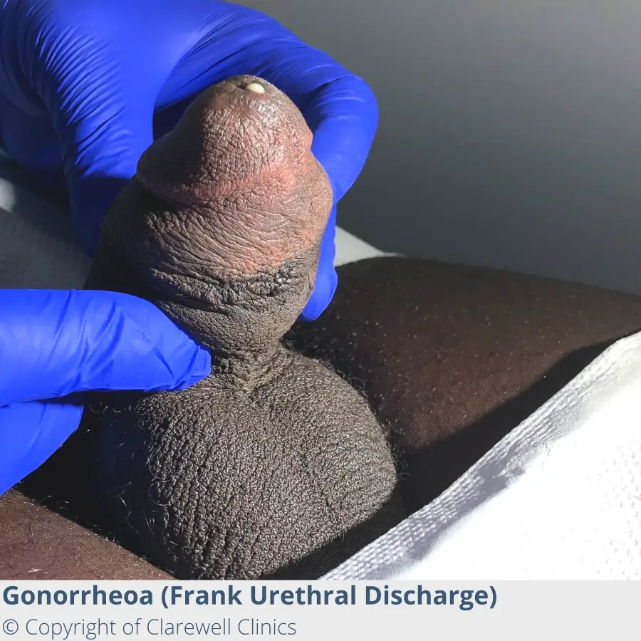

Expanded Nursing Uganda Explanation
Gonorrhoea, Chlamydia, Trichomoniasis, Vaginosis, Warts and Herpes, PID should be reviewed through safe maternal and newborn assessment, early recognition of danger signs, respectful communication and timely referral. Connect the definition to vital signs, bleeding, fetal or newborn wellbeing, patient education and local protocol requirements.
Contents, 35 sections (tap to expand)
01 GONORRHOEA
In women , this includes the cervix , uterus , and fallopian tubes , while in both men and women , it affects the urethra . Additionally, Gonorrhea can impact other areas such as the mouth , throat , eyes , and rectum . Perinatal transmission from an infected mother to her child during delivery through the birth canal is also possible.
Incubation Period: 2 to 7 days
02 Signs and Symptoms:
In Men:
- Dysuria (painful urination).
- Genital sores.
- White, yellow, or green urethral discharge (usually appearing 1-4 days after infection).
- Testicular or scrotal pain.
- Burning sensation in the throat.
In Women:
- Dysuria.
- Yellowish-white (pus) vaginal discharge.
- Rectal discharge.
- Genital sores.
- Anal itching, soreness, or pain during oral sex.
- Painful bowel movements.
- Pharyngeal infection may cause a sore throat but is usually asymptomatic.
03 Complications:
Untreated gonorrhoea can lead to severe permanent problems in both men and women, increasing the risk of acquiring HIV, hepatitis B and C.
In Women:
- Pelvic inflammatory diseases (PIDs)
- Internal abscess and chronic pain
- Blockage of fallopian tubes
- Increased risk of ectopic pregnancy
- Infertility
- Urinary tract infections (UTI)
- Bartholin’s abscess
- Puerperal sepsis
- Ophthalmia neonatorum
In Men:
- Infertility
- Orchitis
- Spread to the blood causing disseminated gonococcal infections (DGI), usually characterized by arthritis and dermatitis
In Neonates:
- Ophthalmia neonatorum.
Note: In both sexes, the bacteria can enter the bloodstream, spreading throughout the body in approximately 2% of cases, causing fever, loss of appetite, arthritic pain, and potentially invading vital organs such as the heart, liver, and CNS.
04 Treatment:
- Ceftriaxone 250 mg in a single intramuscular dose.
- Azithromycin 1 g orally in a single dose.
- Doxycycline 100 mg orally twice a day.
- Erythromycin (500mg qid) in pregnancy
Alternative Treatment:
- Cefixime 400 mg in a single oral dose.
- Doxycycline 100 mg orally twice a day.
05 CHLAMYDIA
It stands as the most frequently reported sexually transmitted disease. Most people with chlamydia do not show symptoms.
06 Mode of Transmission:
It is spread through unprotected sexual intercourse, whether vaginal or oral, with an infected person.
07 Signs and Symptoms:
In Women:
- Increased vaginal discharge.
- Vaginal bleeding.
- Bleeding between periods.
- Bleeding during and after sex.
- Lower abdominal pain (LAP).
- Burning pain during urination.
In Men:
- Watery discharge from the penis.
- Burning/itching around the penile tip.
- Frequent urination.
- Testicular pain.
08 Investigations:
- Vaginal swabs.
- Urethral swabs.
- Urinalysis.
09 Treatment:
- Azithromycin (Azithromax) 1g single dose.
- Erythromycin 500mg every 6 hours for 7 days.
- Levofloxacin (Levaquin) 500mg once daily for 7 days.
10 Complications:
- Pelvic inflammatory diseases (PIDs).
- Infertility.
- Ectopic pregnancy.
- Cervicitis.
- Arthritis.
- Bartholin’s abscess.
- Ophthalmia neonatorum.
11 PROTOZOA-TRICHOMONIASIS
Caused by Trichomonas vaginalis
- Incubation Period: Months to years
12 Symptoms:
- Yellowish froth and offensive vaginal discharge
- Dyspareunia
- Reddened erythematous mucosa
13 Diagnosis:
- Profuse, purulent malodorous discharge
- May be accompanied by vulvar pruritis
- Secretions may exudate from the vagina
- Severe cases → patchy vaginal edema and strawberry cervix
- pH >5
- Microscopy: motile trichomonads and increased leukocytes
- Clue cells may be present if bacterial vaginosis (BV) is present
- Whiff test may be positive
14 Treatment:
- Metronidazole 500mg TDS for 5/7
- Tinidazole, secnidazole, ornidazole pessaries can be used
- Nystatin and clotrimazole cream
- Drez V gel
- Flagyl gel is not effective
- The partner should be treated
15 Bacterial Vaginosis (BV)
Bacterial vaginosis , also known as vaginal bacteriosis , is the most common cause of vaginal infection for women of childbearing age.
It frequently develops after sexual intercourse with a new partner, and it is rare for a woman to have it if she has never had sexual intercourse.
Bacterial vaginosis (BV) also increases the risk of developing a sexually transmitted infection (STI). However, BV is not considered an STI.
16 Diagnosis:
- Fishy odour (especially after intercourse)
- Grey secretions
- Presence of clue cells
- pH >4.5
- Positive whiff test (adding KOH to the vaginal secretions will give a fishy odour)
17 Treatment:
- Flagyl 500 mg Po Bid for one week (95% cure)
- Flagyl 2g PO x1 (84% cure)
- Flagyl gel PV
- Clindamycin cream PV
- Clindamycin PO
- Treatment of the partner is not recommended.
18 Transmission:
- Penile-vaginal, oral-genital, oral-anal, or genital-anal contact
- Condoms provide some protection but don’t prevent transmission of viral infections on vulva, base of penis, scrotus, and other genital areas not covered by condoms
- HPV is most commonly transmitted by people who are asymptomatic
19 Genital Warts (Condylomata Accuminata):
Genital warts are a viral infection that develops in the genitals, perineum, and anus. In females, it rarely occurs in the vagina. They grow rapidly during pregnancy and regress in the puerperium. The infection may result in an offensive odour.
20 Diagnosis:
Based on the clinical findings of a soft chancre, a small painful ulcer that is irregular in shape.
21 Treatment:
- Application of 10% Podophyllin to the wart 2-3 times a week. Note: Podophyllin burns; therefore, the skin around it must be protected with the application of Vaseline.
- The medicine is washed after 4 hours of application.
- Cauterization is another alternative treatment in case of severe genital warts.
- The patient must be investigated for syphilis to rule out the Condylomata of the infection.
- Podophyllin is contraindicated in pregnancy, so treatment is usually delayed until after birth.
22 Genital Herpes (Herpes Simplex):
Genital herpes presents as small, painful blisters on the vulva, perineum, vagina, and/or the penis or perineum in males, caused by the herpes simplex virus .
Incubation period: 2-21 days.
23 Signs and symptoms:
- Small painful blisters that burst and leave small red painful wounds.
- Dysuria from irritation of urine.
- Pyrexia.
- Purulent vaginal discharge.
- Muscle pain and headache with the initial attack.
- Enlarged inguinal nodes that may be tender on touch.
24 Treatment :
- 5% Acyclovir cream application five times daily for 5 days or
- Acyclovir 200 mg orally five times daily for 5 days.
- Warm saline bath to relieve pain and prevent secondary infection.
- Treatment of the partner is important to prevent re-infection. Note: Pregnant women with active genital herpes at term usually undergo elective caesarean section to prevent the risk of infections to the baby.
25 Pelvic Inflammatory Diseases (PID):
PID is an infection of the upper genital tract (uterus, fallopian tubes, ovaries, and peritoneum), commonly resulting from STDs (gonorrhoea, Chlamydia).
Further Reading: Click Here
26 Signs and symptoms:
- Fever.
- Abdominal pain and tenderness.
- Extreme excitation (tenderness of the vaginal fornices on moving the cervix).
27 Treatment:
- Metronidazole 400 mg-500 mg orally twice a day for 10 days, plus
- Azithromycin.
- Erythromycin or Cotrimoxazole given in sensitivity reaction.
28 Complications:
- Salpingitis.
- Infertility.
- Chronic abdominal and pelvic pain.
- Menstrual disorders.
- Dyspareunia.
29 Prevention:
- Safer sex practices.
- Fidelity in marriage.
- Avoiding promiscuity.
- Health education on STIs.
- Adequate detection and treatment of infected persons.
- Investigations and serological tests of pregnant mothers for adequate prompt treatment.
30 Basic Facts About STIs:
Sexually transmitted diseases (STDs) are infectious conditions caused by one or more microorganisms primarily transmitted from one infected person to another during unprotected sexual intercourse.
The following table provides a summary of the most common STDs , categorizing them based on their etiological grouping and highlighting their main clinical features.
- STD Main Clinical Features Causative Agents Incubation Period
- Bacterial STIs
- Gonorrhoea Pus discharge from urethra or cervix, dysuria, frequency Neisseria Gonorrhoea 2-6 days
- Syphilis Primary chancre is painless, well-demarcated ulcer; other features depend on clinical stage Treponema pallidum 2-4 weeks
- Non-gonococcal urethritis/cervicitis Thin, non-itchy discharge from cervix or urethra Chlamydia, Mycoplasma hominis, and others 7-14 days
- Lymphogranuloma venereum (LGV) Swollen, painful inguinal glands (buboes) occasionally with an ulcer; may be bilateral Chlamydia organism, LGV strains 3-30 days
- Granuloma inguinale Heaped-up (beefy) ulcer, usually painless, associated with inguinal lymph node swelling Calymatobacteria granulomatis 1-10 weeks
- Bacteria vaginosis Thin discharge with a fishy smell from the vagina Gardnerella vaginalis May be endogenous
- Chancroid Dirty, painless ulcer, usually underlying Haemophilus ducreyi 1-3 weeks
- Viral STIs
- Herpes Genitalis Recurrent small, multiple painful ulcers beginning as vesicles Herpes Simplex Virus 2-7 days (initial infection)
- Hepatitis B virus infection (HBV) Jaundice with inflammation of the liver Hepatitis B virus Varies
- HIV/AIDS According to WHO clinical criteria for the case definition for AIDS Human Immunodeficiency Virus Months-10 years or more
- Venereal warts/HPV Finger-like growths on the genitals Human Papilloma Virus Weeks-months
- Fungal STIs
- Genital candidiasis White curd-like discharge coating vaginal walls, itchiness, soreness, excoriation, cuts Candida Albicans May be endogenous and recurrent
- Ringworm (fungal) Patches of hypo/hyperpigmentation in the pubic area Tinea Organisms Varies
- Protozoal STI
- Trichomoniasis Greenish, itchy discharge from the vagina with an offensive smell Trichomonas vaginalis Variable
- Other STIs
- Scabies Vesicles containing mites in the pubic area Sarcoptes scabiei 30 days
- Pediculosis (vermin) Presence of nits in pubic hair, itching in pubic area Phthirus pubis (pubic lice) 7 – 10 Days
31 Risk Factors for STI/STDs:
Risk factors contributing to the prevalence of STDs in Uganda encompass a range of influential elements. These include:
- Multiple Sexual Partners : Engaging with numerous sexual partners increases the risk of contracting and spreading STDs.
- Lack of and Inconsistent Condom Use : Inadequate or irregular use of condoms exposes individuals to heightened susceptibility to sexually transmitted infections.
- Lack of Circumcision in Men : Non-circumcision in men has been identified as a potential risk factor for the transmission of STDs.
- Alcohol/Drug Use : Alcohol consumption and drug use significantly impact sexual health. Regular alcohol use, especially in social contexts, may lead to less discerning choices in sexual partners, lower inhibitions, and hinder the negotiation and correct usage of condoms during sexual activities.
- Early Sexual Involvement by Younger Age Group : Premature engagement in sexual activities among younger age groups contributes to the prevalence of STDs.
- Socio-Cultural Factors, such as Early Marriage : Societal and cultural norms, including early marriage practices, can contribute to the spread of STDs.
- Economic Factors, Particularly Poverty: Economic challenges, notably poverty, can limit access to preventive measures and healthcare services, increasing vulnerability to STDs.
- Gender-Related Factors, Including Limited Negotiation Powers for Women : Gender dynamics, where women may have restricted negotiation powers concerning sexual matters, contribute to the risk of STD transmission.
- Legal and Human Rights Constraints, Stigma, and Discrimination : Legal prohibitions, human rights limitations, and the stigma associated with certain populations, such as sex workers, can affect interventions aimed at preventing and controlling STDs.
- Inequality in Access to Social and Health Services : Differences in accessing social and health services further increases the risk of STDs, creating a scenario where certain populations face increased vulnerability.
32 Nursing Uganda Clinical Lens
Use Gonorrhoea, Chlamydia, Trichomoniasis, Vaginosis, Warts and Herpes, PID as a practical nursing topic, not only a memorized definition. Link cause, transmission, incubation, clinical features, treatment support and prevention.
- What to understand first: define gonorrhoea, chlamydia, trichomoniasis, vaginosis, warts and herpes, pid, identify the normal or expected pattern, then explain what changes when the patient is unwell.
- Why it matters in care: the nurse must recognize risk early, explain findings clearly, document accurately and know when to escalate.
- How to revise it: connect each point to assessment, nursing diagnosis or care problem, intervention, rationale and evaluation.
33 Assessment Guide
- Temperature, pulse, respiratory status, hydration, pain, rash, wounds, stool, urine or sputum changes.
- Exposure history, travel, contacts, vaccination status and comorbidities.
- Specimen orders, isolation needs, antimicrobial history and danger signs.
34 Nursing Priorities, Rationales and Outcomes
- Use standard precautions and transmission-based precautions where needed.
- Support hydration, nutrition, medicines, monitoring and early referral for severe disease.
- Teach prevention, adherence, hygiene, safe water, vector control or contact tracing as relevant.
The rationale for these priorities is patient safety: nursing actions should prevent deterioration, reduce discomfort, support recovery and create clear evidence for the next caregiver.
- Expected outcome: Symptoms improve, complications are detected early, transmission risk is reduced and treatment is completed correctly.
35 Patient Teaching and Revision Check
- Explain gonorrhoea, chlamydia, trichomoniasis, vaginosis, warts and herpes, pid in simple language the patient or caregiver can repeat back.
- Teach warning signs, medicine or follow-up instructions, hygiene or lifestyle points where relevant.
- For exams, prepare a short answer using: definition, causes or risk factors, signs, assessment, management, complications and prevention.
- For ward practice, document baseline findings, actions taken, patient response and the plan for review.
Illustrations and Diagrams (1)

Related Video Lectures
Watch nursing lecture videos on YouTube for this topic. Opens in a new tab.
Watch on YouTubeExternal link: YouTube may use its own cookies and terms. Nursing Uganda is not affiliated with YouTube.